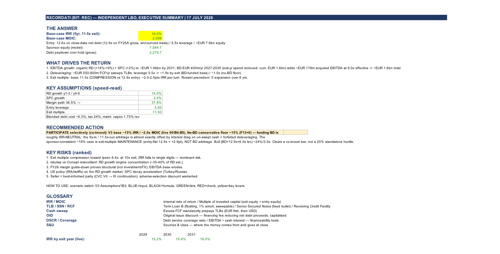

CVC is taking Recordati private for €10.7bn. I rebuilt the deal from scratch to see if the price works for a private equity buyer. My answer: it earns about a 15% annual return, not the 20%+ a fund normally targets. The surprise was the acquisition strategy everyone credits for pharma deals (buying smaller drug companies to grow) adds almost nothing to the return rate, because the cash it uses would otherwise be paying down debt. For this deal to really work, CVC needs the market to pay the same high price in five years that it is paying today. That is the actual bet.
PARTICIPATE selectively as a co-investor (6/10) — under the assumptions this memo was written with. This assumes buying at 12.6x profit (entry multiple), using 5.5x leverage, and selling at 11.5x (exit multiple), while spending €400m a year on Business Development (BD) from 2027 to 2030. Without any BD spend, the return is still ~15.1%. If we assume they sell at the same high price they bought at (12.9x), the return jumps to ~18%. If they use more debt and operations beat expectations, it hits ~24%. Bear case ~4% / Bull case ~24%.
Update, 3 Sep 2026: the real deal structure, now disclosed in the CONSOB offer document, uses much less equity than this memo assumed — 44% versus the 58% estimated here. Recalculated on the real structure, base-case IRR is ~22.3% / ~2.74x MOIC, which would clear the 20% standalone hurdle this memo declined on — at the cost of materially higher leverage and thinner coverage. See the full Scorecard below before treating the rating above as current; I have not yet decided whether this changes the PARTICIPATE rating itself.
Two businesses on one Profit & Loss (P&L) statement: Specialty & Primary Care (~€1.54bn revenue, growing 2 to 3% annually, acting as the safe bond-like cash cow) funding Rare Diseases (~€1.08bn revenue, growing 29.7% in 2025, acting as the high-growth equity with strong pricing power in the US market). The deal is €51.29/share (excluding dividend), totaling €10.73bn in equity. The Enterprise Value (EV) is ~€12.49bn, which means 12.6x the company's 2025 operating profit (EBITDA). This is effectively CVC selling their old Fund VII stake to their new Fund IX, with GBL co-controlling and large institutional investors co-investing. Critical precedent: CVC originally bought in 2018 at €28.00/share, which was the exact same 12.9x multiple. Over eight years, there was zero multiple expansion, meaning all their profit came from doubling the operating profit (EBITDA) and collecting dividends.
| Sources (€m) | Amount | Uses (€m) | Amount |
|---|---|---|---|
| Sponsor equity — CVC/GBL/Co-Investor (disclosed commitment) | 4,525 | Equity purchase price (€51.29 × 198.5m sh subject to offer) | 10,182 |
| PIK Notes (disclosed max, accrues, paid at exit) | 1,530 | Refinance existing net debt (close-date est.) | 1,767 |
| Bridge/Senior Facilities (balancing; cash-pay) | 6,495 | Advisory & other fees (1.25% of EV) | 149 |
| Senior RCF (€1,000m, undrawn) | — | OID & financing fees (2.5% of new debt) | 201 |
| Minimum operating cash funded at close | 250 | ||
| Total sources | 12,550 | Total uses | 12,550 |
Equity, PIK Notes, and the €10,182m Max Disbursement Amount are disclosed figures from the CONSOB offer document (31 Aug 2026) — see the Scorecard below. Bridge/Senior Facilities is a balancing figure and comes out ~€445m above the disclosed €6,050m bridge ceiling under this model's own (never-disclosed) refinancing estimate — flagged as a WARNING check in the '06 Sources & Uses' tab, not hidden. Bridge/Senior and PIK interest rates are this model's estimates; the offer document does not disclose margins. Every figure is pulled directly from the '06 Sources & Uses' tab of the downloadable model.
| Item | Value | Item | Value |
|---|---|---|---|
| Entry EV / FY25 EBITDA | 12.6x close / 12.9x announced | Exit EBITDA (2031E, incl. BD) | ~€1,638m |
| Entry leverage (gross debt/EBITDA) | ~8.1x | Net debt at exit | ~€6,439m (3.9x) |
| Year-1 interest coverage (cash) | ~2.9x (~2.1x incl. PIK accrual) | Sponsor equity | €4,525m (disclosed) |
| Base-case MOIC / IRR (5yr) | ~2.74x / ~22.3% | ||
Recalculated from the real disclosed structure — see the Scorecard below for what changed and why the IRR moved. Real entry leverage is materially higher (~8.1x vs. this page's original 5.5x estimate) because the disclosed structure has less equity (44% vs. the original 58% estimate) and a PIK tranche layered on top of the cash-pay debt. Higher leverage cuts both ways: it amplifies the equity return if the plan holds, and it thins the coverage cushion if it doesn't.
Debt Structure (v2, per the CONSOB offer document): Bridge/Senior Facilities (cash-pay, 100% cash-swept, no disclosed mandatory amort) plus PIK Notes (accrue non-cash, paid in kind, not swept — junior, growing balance repaid at exit/maturity) plus a €1,000m undrawn Senior RCF. Interest rate margins are not disclosed anywhere in the offer document ("EURIBOR plus a certain margin agreed") — the rates used here are this model's own estimates, not sourced figures. 2026 operating profit (EBITDA) lands inside company guidance. Maintenance capital expenditure (capex) is only 1.5% of revenue, meaning the business requires very little spending to maintain its current operations.
Without BD spend, the return is ~15.1%. Funding €400m a year of BD adds essentially 0% to the return rate. The profit from buying drug assets at 9x and selling them at 11.5x is almost exactly canceled out by the interest costs on the cash used to buy them (BD grows the total cash dollars returned, but not the percentage return rate). Keeping the exit price flat at 12.9x adds +2.9% to the return. The exit multiple is basically 100% of the sponsor's return case. The idea that "flat exit price OR funded BD" are equal substitutes was wrong, so I deleted the "OR". (Note: I removed the BD spend planned for the final exit year, as it would only generate profit after the deal was sold. Total cumulative BD modeled is €1.6bn.)
(1) The sale price falls closer to peer Ipsen's 8.4x multiple. This is the dominant risk: at a 10x exit, the return drops to ~4%. (2) Isturisa (which is 35 to 40% of the Rare Disease revenue) faces competition from Corcept's relacorilant. (3) The guided profit margin drop in 2026 (from 37.8% to 36.5%) turns out to be permanent structural decay, rather than a temporary investment or currency issue. (4) US drug pricing policy and tariffs hurt the growth market. (5) The mature Specialty & Primary Care drugs decay faster than expected. (6) Adverse selection: the seller knows the company best and chose to sell. This is mitigated by the chairman rolling over his shares and new institutional checks, and is priced into our lower exit multiple assumption.
My assumed €5.45bn debt sits at the bottom of the reported €5.5 to 6.0bn package, and the entry multiple is identical to the real deal. The gap between my ~15% return and the sponsors' target ~18% is almost entirely the exit price. I deliberately assumed a lower exit price (11.5x instead of 12.9x), which costs 2.9% in return. Sponsors also assume they can use 6.0x opening leverage (adding ~1% return) and that the drug Isturisa will hit >€1.2bn in peak sales (adding 2 to 3% to the annual growth rate). Conclusion: at my conservative floor, the deal clears mid-teens. Their return case requires holding the exit price flat, which is exactly why this asset went to the sponsor who has run it since 2018.
This memo's original Sources & Uses was an estimate — no offer document existed yet. The CONSOB-approved offer document (31 Aug 2026, acceptance period through 15 Oct) discloses the real financing. It's a different structure than assumed, not just different numbers.
| Item | Original estimate | Disclosed / recalculated |
|---|---|---|
| Equity commitment | ~€7,585m (58% of cap, a plug) | €4,525m (44% of Max Disbursement Amount, disclosed & fixed) |
| Debt structure | Term Loan B (EUR+USD) + Senior Secured Notes | Bridge/Senior Facilities + PIK Notes (accrues, non-cash) |
| PIK Notes | Not modeled | Up to €1,530m disclosed, 8yr maturity |
| Entry leverage (gross debt/EBITDA) | 5.5x | ~8.1x |
| Base-case MOIC / IRR (5yr) | ~2.01x / ~15.0% | ~2.74x / ~22.3% |
The equity gap alone tells the story: less real equity in the deal than this memo guessed means the same underlying business plan produces a bigger equity multiple if it works — that's leverage doing what leverage does. It also means a much thinner cushion if it doesn't: year-1 cash interest coverage falls to ~2.9x (~2.1x if you count the PIK accrual, which is a real cost even though it isn't a cash outflow yet), against this memo's original ~3.2x assumption.
One unresolved flag, disclosed rather than smoothed over: reconciling the full transaction (equity purchase plus refinancing existing debt plus fees) against the disclosed facility sizes shows the required Bridge/Senior draw running about €445m above the disclosed €6,050m bridge ceiling — using this model's own estimate for refinanced net debt, which was never disclosed and has been this model's own assumption since the first version of this page. That's not an error in the disclosed structure; it most likely means either that estimate is a bit high, or the deal also draws on the previously-unmodeled €1,000m Senior RCF. The model flags this as a WARNING check on the '06 Sources & Uses' tab rather than forcing a fake balance.
What I haven't done yet: decided whether this changes the PARTICIPATE rating. A 22.3% IRR clears this memo's own 20% standalone hurdle — the exact reason it declined the deal as a standalone buyer in the first place. But that number now comes with real leverage almost 50% higher than assumed and a materially thinner coverage cushion, which the original 6/10 conviction score didn't price in. Re-scoring conviction against the new risk profile, not just updating the return number, is the next piece of work here — not done as part of this update.
Source: CONSOB-approved offer document, 31 Aug 2026 (consob.it). Structure verified against the primary document, not a secondhand summary — see Section G, Paragraphs G.1.2.a-d. Also logged in '03 Assumptions' rows 56-64 of the downloadable model. Bridge/Senior and PIK rates remain this model's own estimates; the offer document does not disclose interest margins.
Positive catalysts: the competing drug relacorilant fails; the first post-close acquisition is bought below 9x. Negative catalysts: 2026 profit margin falls below 36%; Isturisa US sales decelerate; the exit market environment deteriorates in 2030 to 2031.
The offer document is now out (31 Aug 2026) and did reveal the real financing structure — see the Scorecard above — but it did not disclose interest rate margins, so "the offer document reveals cheaper debt" only half-resolved: the structure is known, the cost of debt still isn't.
Red-team revisions applied: Reframed the base case as a conservative floor rather than a midpoint. Decomposed the return math (Business Development adds ~0% return, while the exit multiple adds +2.9%). Fixed a bug where final-year acquisition spend was counted without giving it time to generate profit. Bridged the entry debt to the actual close date. Noted that a dividend recap (borrowing money to pay a special dividend mid-hold) would add ~1% to the return rate, but kept it out for conservatism. Deferred modeling a 7-year hold until recap mechanics and interest income are fully built.
The finding that Business Development, buying smaller drug companies, adds close to nothing to the return rate once its financing cost is netted against the multiple arbitrage is specific to this deal's numbers, but the mechanism behind it is not obviously unique to Recordati. If it holds for other sponsor-backed pharma roll-ups (other CVC, EQT, or Blackstone healthcare platforms), the "acquisitive growth" story that gets marketed around a lot of these deals may be doing less work than advertised. I have not tested this against a second deal yet: it is on Ideas in Progress.
The '00 Executive Summary' tab of the workbook — headline returns, key assumptions, ranked risks, and the live IRR-by-exit-year row, exactly as they compute in Excel. 605 formulas across 14 tabs; the scenario switch on '03 Assumptions' recalculates everything.
